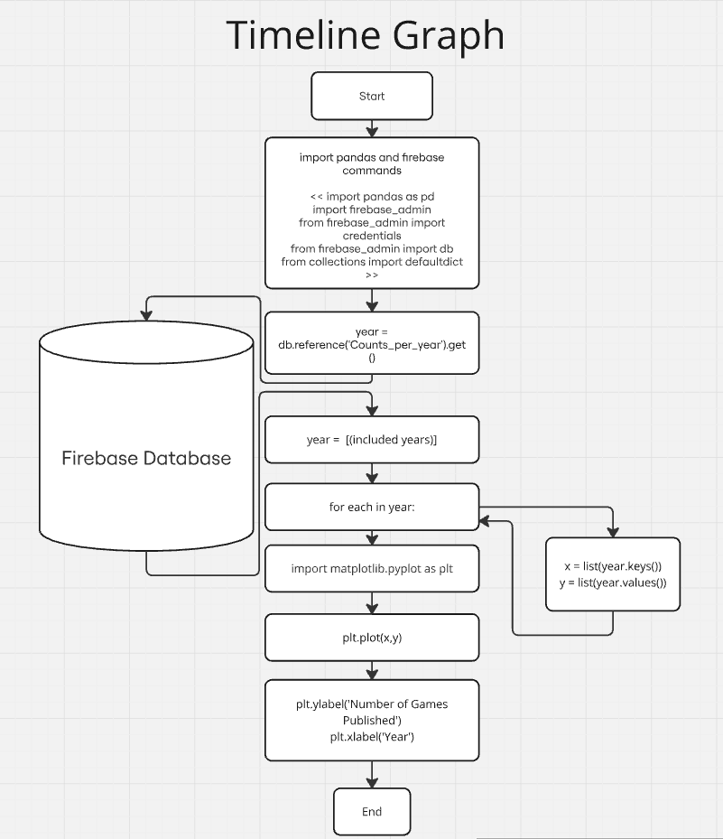
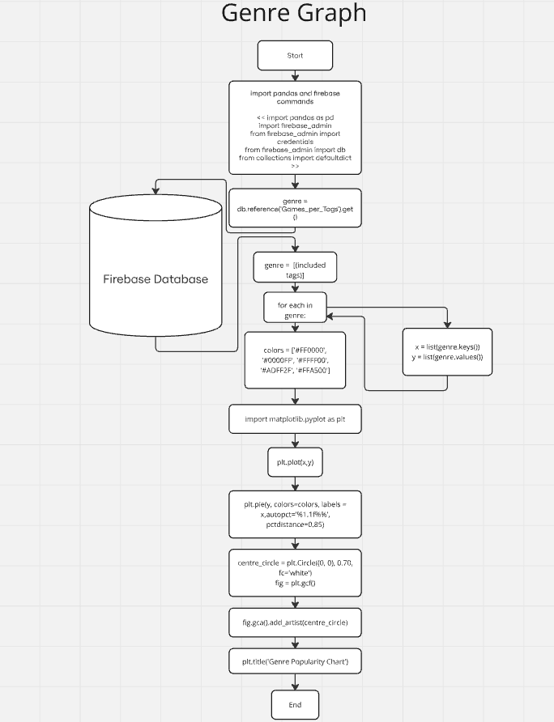
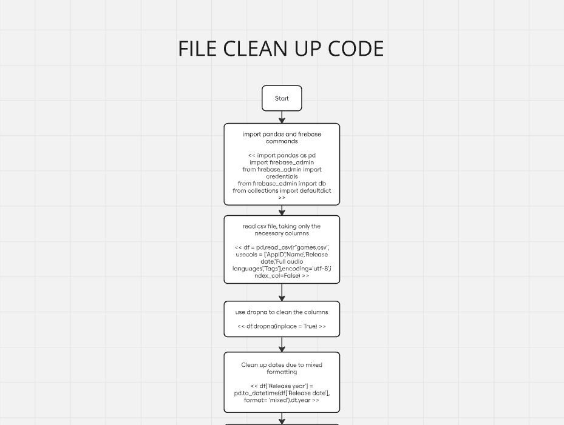
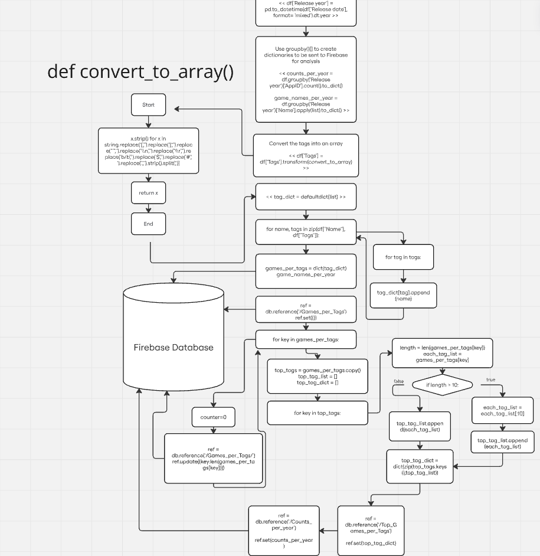
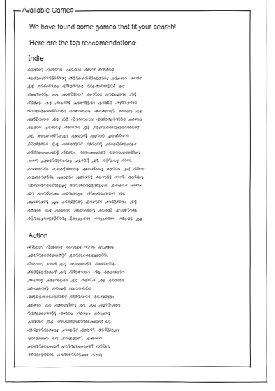
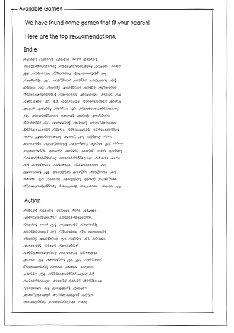

The plan for my website is to create a platform targeted at the gaming demographic using my Steam games
dataset. It will include interactive elements and cater to users of all ages. I will adopt the agile
programming methodology to build the website, focusing on the user experience both in terms of front-end and
back-end development, and ensuring the presentation of data is digestible and engaging.
The website will feature a clean and organized interface, meeting both basic and advanced requirements. I
will extract relevant data from the chosen CSV file, clean it, and send it to Firebase for storage. After
analyzing the data with Python, I will create interactive graphs to visually present key information. At
least two, ideally three, graphs will be displayed, each representing different aspects of the dataset.
These will include a timeline of Steam game publications by year and a doughnut chart showing the frequency
of different game genres.
The site will have a simple layout with three main pages: a homepage, a user form page, and a game search
page. Users can interact with the graphs by selecting different variables that alter the display.
Additionally, a "Game Submission" form will allow users to submit their own data, contributing to the
visualizations.
The user form will collect information and provide a list of relevant averages and demographic data, showing
where the user fits within specific categories. Another section will allow users to select from a
questionnaire or form to receive personalized game recommendations based on their preferences.
The website will include two main interactive graphs:
1. A timeline displaying the number of Steam games published per year (from 1980 to 2025) to highlight
trends in game development.

2. A doughnut chart illustrating the frequency of game genres within the dataset. The timeline will allow
users to zoom in on specific data points for a more detailed view.

The back-end of the site will focus on cleaning the CSV data using Pandas, uploading the cleaned data to
Firebase, and analyzing it for visual display. This data will then be used to populate the charts and
provide an informative experience for users.


I have also included flow charts to show how the data is processed and analyzed before being presented on
the site.
The technologies used will be Thonny for python and Visual Studio Code for Javascript and HTML.
Visualisers:
 
